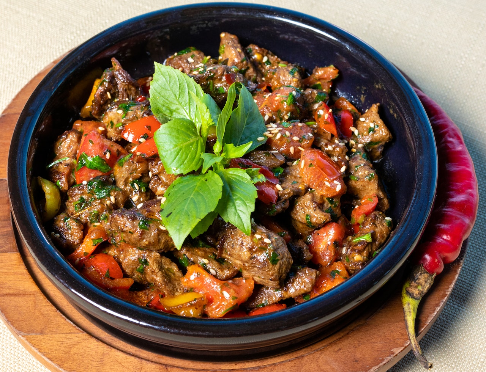

Szegediner Gulasch
 120 Min.
120 Min. simpel
simpel 27.03.2023
27.03.2023Zutaten für
| 800 g | Gulasch,(Rind) |
| 150 g | Speck |
| 400 g | Zwiebel(n) |
| 3 | Knoblauchzehe(n) |
| 5 EL | Tomatenmark |
| 2 El | Mehl |
| 500 ml | Gemüsebrühe |
| 1 gr. | Dose(n) Sauerkraut |
| 1 TL | Zucker |
| 250ml | Sahne |
| 4 EL | Pflanzenöl |
| Gewürze nach belieben: | Pfeffer,Kümmel,Petersilie,Paprika und Lorbeerblätter |
Nährwerte pro Portion : kcal 620 | Eiweiß 20,30 g | Fett 50,93 g | Kohlenhydr. 19,80 g
Zubereitung
25 MinutenGesamtzeit ca. 2 Std. 30 MinutenFleisch mit Salz und Pfeffer würzen, Pflanzenöl in einer Pfanne erhitzen, und das Fleisch mit Zwiebeln, Speck und Knoblauch darin anbraten. Tomatenmark hinzufügen und mitbraten. Das Bratgut mit Mehl bestäuben, und mit der Gemüsebrühe auffüllen. Sahne und Lorbeerblätter dazugeben, und 90 Minuten köcheln lassen. Sauerkraut hinzufügen und weitere 45 Minuten köcheln lassen. Dann mit den Gewürzen abschmecken.
Rezept erstellt von
 Dominik
Dominik